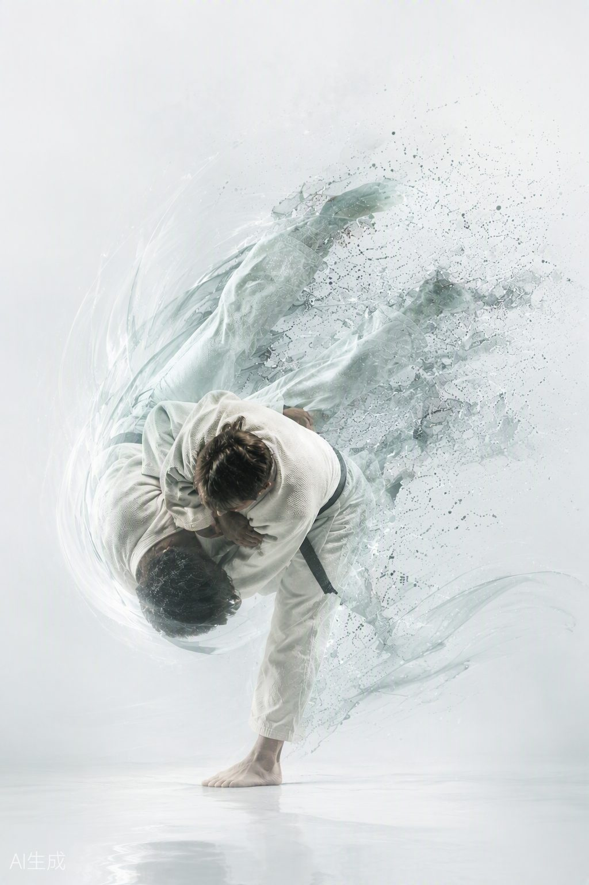
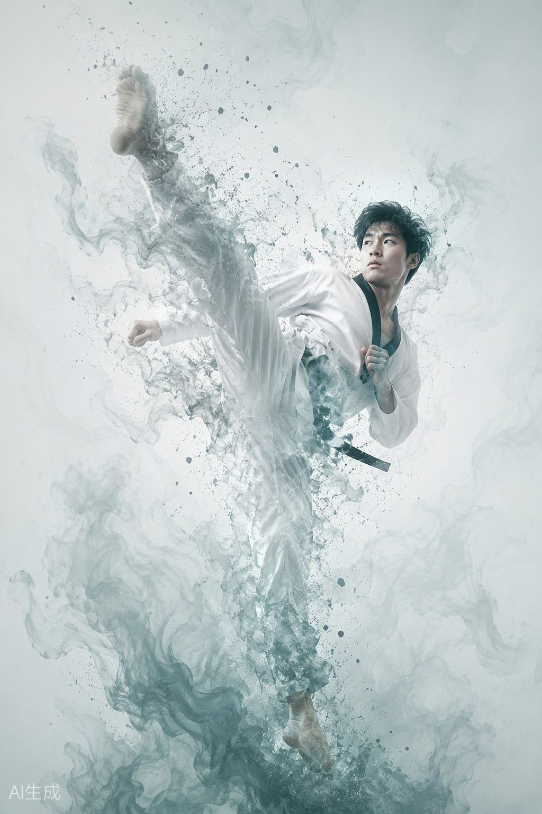
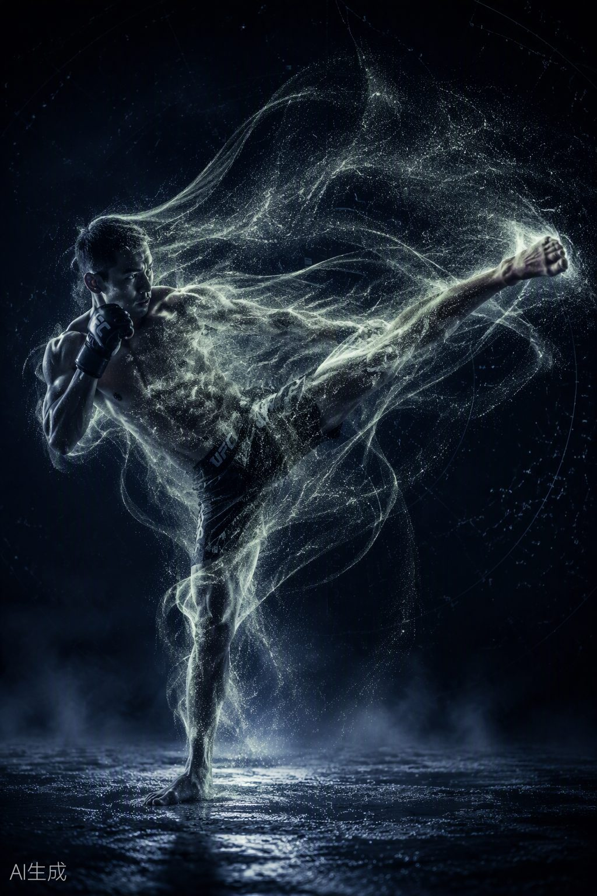
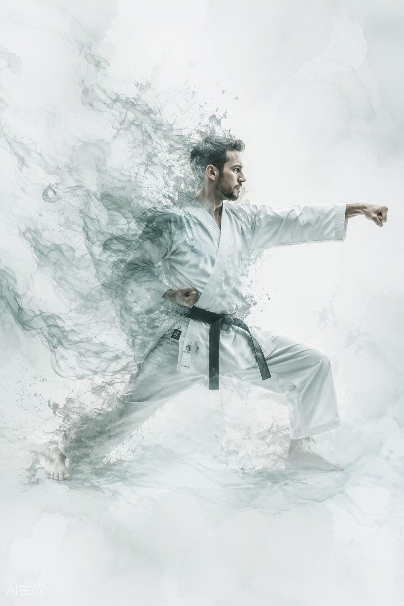
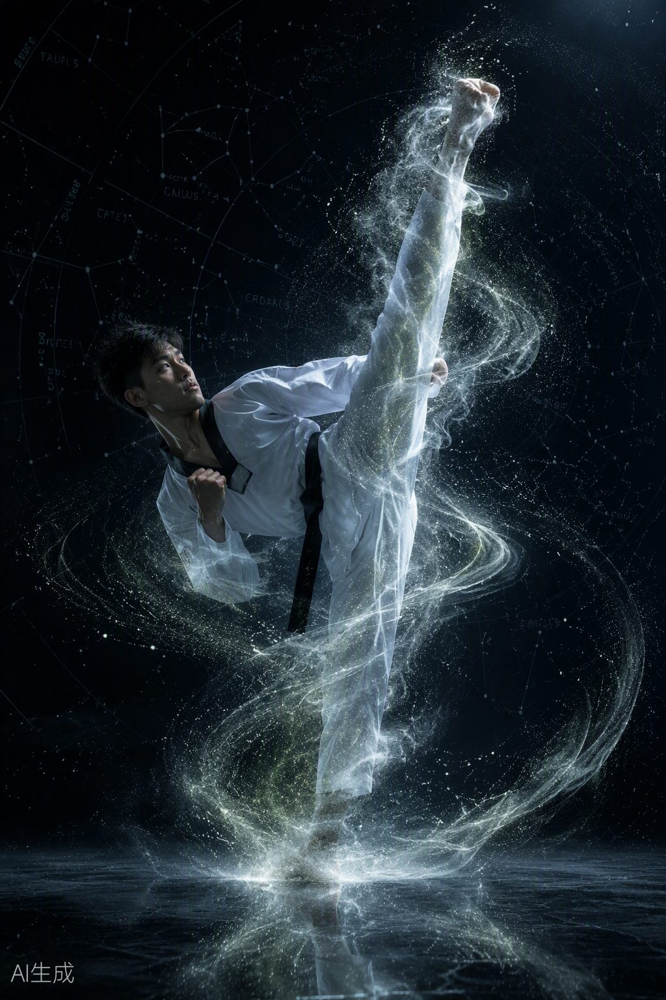
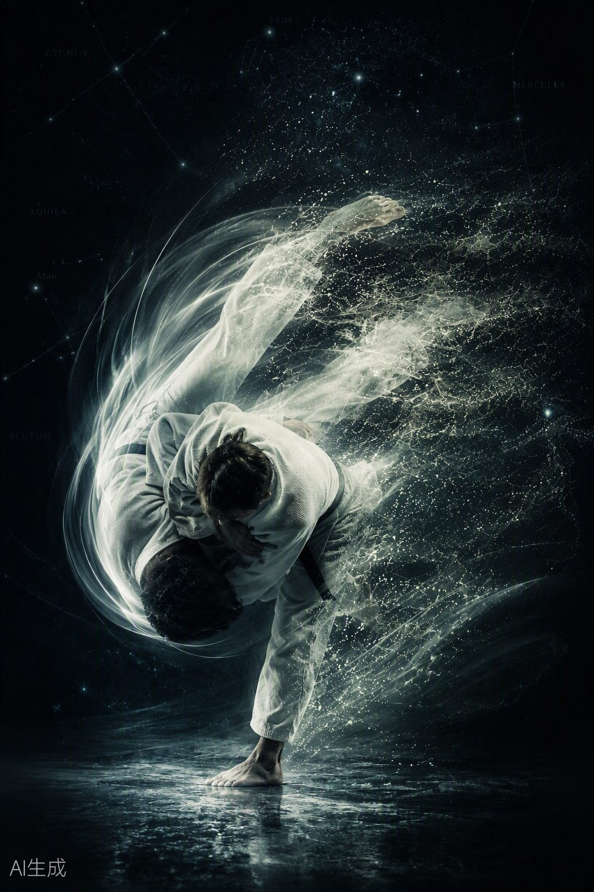
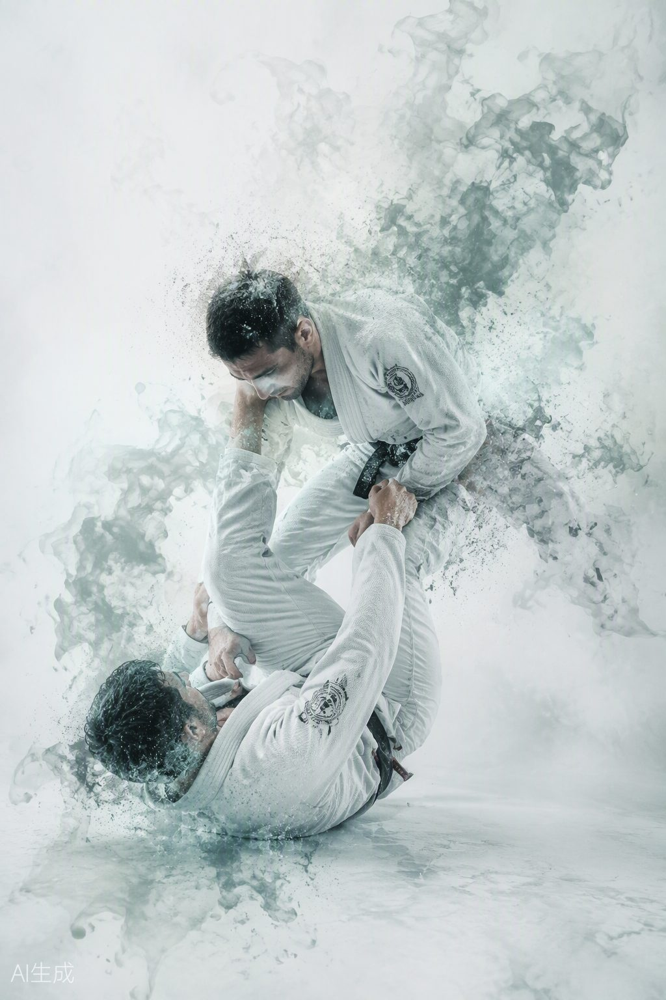
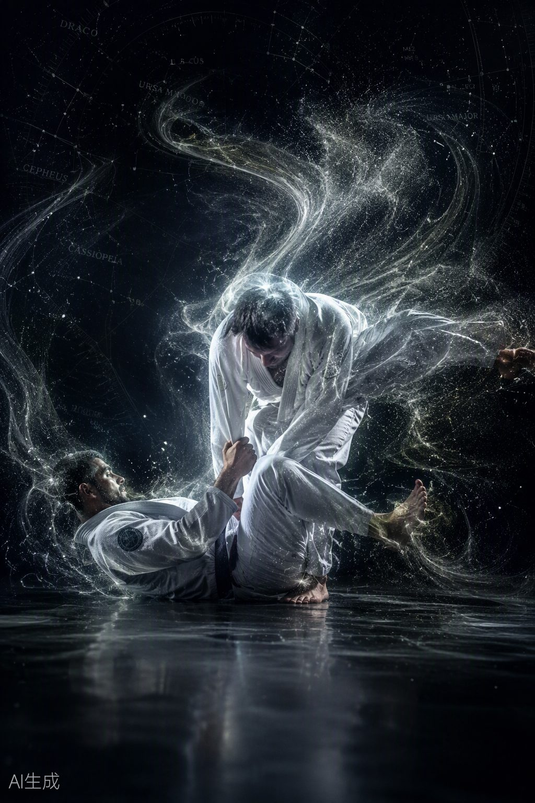

01
Grundschule
Das wichtigste Trainingselement: Hier werden die notwendigen Techniken für Verteidigung und Angriff erlernt – Stellungen, Blöcke, Schläge und Tritte, sauber und immer wieder.
Koreanische Kampfkunst für Kinder, Jugendliche und Erwachsene. Selbstverteidigung, Sport und ein Weg – seit fünf Jahrzehnten im Herzen von Melsungen.

HO SIN DO hat seinen Ursprung in Korea und gehört zu den asiatischen Kampfkünsten, die in Deutschland bekannt geworden sind. Arme und Beine werden durch Schläge und Tritte zur Verteidigung, zur Selbstverteidigung und zum Angriff eingesetzt. Gebracht hat die Kunst in den 1960er-Jahren der koreanische Großmeister Soo Ung Choi.
Unser Dojang ist nicht nur ein Trainingsraum, sondern ein Ort, an dem das körperliche Training nach den Grundsätzen des DO geführt wird: Mut, Geduld, Höflichkeit, Ehrlichkeit, Vertrauen und Respekt. Die Verbindung von HO und SIN steht für das Zusammenwirken von Geist und Körper, das sich im Reifeprozess des Sportlers entwickelt.

Koreanische Selbstverteidigung mit Hand- und Fußtechniken, Formen (Hyong), Hebel-, Wurf- und Waffentechniken. Für Kinder, Jugendliche und Erwachsene – vom weißen Gurt bis zum DAN.

Kickboxen wird in Melsungen seit 1995 betrieben. Ein moderner Kampfsport, der sich aus traditionellen Stilen wie Karate und Taekwondo entwickelt hat und Boxtechniken, Gewichtsklassen und Sicherheitsstandards vereint.

Gesundheitsförderndes, ganzheitliches Boxtraining ohne direkten Körperkontakt: Kraft, Ausdauer, Schnelligkeit, Beweglichkeit und Koordination – für alle Altersgruppen, Frauen und Männer, jedes Fitnesslevel.

Entspannung, Gesundheitsübung, Meditation und Ausgleichsbewegung – Qi Gong und die Tai-Chi-Form für alle Menschen unabhängig von Alter und Fitness, ohne Leistungsdruck.
Alle Einheiten finden im Gymnastikraum der Gesamtschule Melsungen statt. Ein kostenloses Probetraining ist jederzeit möglich – einfach mit bequemer Sportkleidung vorbeikommen oder vorher kurz Bescheid geben.
In den hessischen Schulferien und an Feiertagen kann das Training entfallen – aktuelle Änderungen erfahrt ihr im Training oder über die Kontaktadresse.
Ein HO SIN DO-Sportler übt zu jeder Zeit Tapferkeit, Geduld, Höflichkeit und Ehrlichkeit. Der Reifeprozess verbindet HO und SIN – das Zusammenwirken von Geist und Körper. Der schwarze Gürtel steht für die Vereinigung aller Farben und markiert den Beginn eines neuen Weges.

Am 31. Juli 1939 in Seoul. Er studiert später an der Kyung-Hee-Universität verschiedene koreanische Kampfkünste.
Am 28. Februar 1964 erhält Soo Ung Choi seine Lehrbefähigung. Aus HO SIN SUL entwickelt er ein modernes, auch sportlich betreibbares Selbstverteidigungssystem: HO SIN SUL-DO, kurz HO SIN DO.
1968 kommt Soo Ung Choi nach Deutschland und gründet die ersten Vereine sowie die S.V.S.U. (Selbstverteidigungs-Sportunion) – den heutigen Deutschen HO SIN DO Verband e.V.
Mit dem Umzug nach Kassel Ende 1969 entstehen viele weitere Vereine in Hessen – Hofgeismar, Willingen, Warburg, Paderborn und Melsungen.
Am 24. August 1976 von neun Mitgliedern gegründet. Jürgen Pschibul ist bis heute als einziges Gründungsmitglied aktiv. Seither wurden über 1.000 Schüler ausgebildet und 59 deutsche Meistertitel gewonnen.

Seit 1995 wird im Verein zusätzlich Kickboxen trainiert – später folgen Tai Chi und Move and Box.
Ein halbes Jahrhundert Kampfkunst, Wettkämpfe, Lehrgänge, Gürtelprüfungen und Vorführungen – und ein Dojang, der offen bleibt für alle, die den Weg gehen wollen.
HO SIN DO ist eine unbewaffnete Selbstverteidigung mit Elementen aus Taekwondo, Judo und Hapkido. Hand- und Fußtechniken, Formen, Hebel-, Wurf- und Waffentechniken sowie Wettkampf und Bruchtest gehören zum Ganzen.
Das wichtigste Trainingselement: Hier werden die notwendigen Techniken für Verteidigung und Angriff erlernt – Stellungen, Blöcke, Schläge und Tritte, sauber und immer wieder.
Übungsformen aus verschiedenen Grundbewegungen, die Angriffs- und Verteidigungstechniken aus unterschiedlichen Stellungen verkörpern – der Kampf gegen mehrere imaginäre Gegner. Für jeden Gürtelgrad gibt es eigene Hyongs, die in Geschwindigkeit, Sauberkeit, Körperhaltung und geistiger Einstellung ein festes Bild ergeben müssen.
Hebel-, Wurf- und Befreiungstechniken als modernes Selbstverteidigungssystem – der Kern, aus dem HO SIN DO entstanden ist.
Freikampf und Formenwettkampf nach Gewichts- und Altersklassen – mit Sicherheitsstandards und Schutzausrüstung. 59 deutsche Meistertitel sprechen für die Wettkampftradition des Vereins.
Eigentlich kein Trainingselement: Der Bruchtest wird nur bei Vorführungen oder Prüfungen ausgeführt und zeigt Konzentration, Technik und Durchschlagskraft.
Waffentechniken mit Schwert (Kum), Nunchaku (Ho Sin Bong) und Stock (Bong bzw. Danbong) ergänzen das System. Das Waffentraining ist den DAN-Trägern vorbehalten.

Die Schülergrade (Kup) werden vom 10. bis zum 1. Kup gezählt, danach folgen die Meistergrade (Dan). Ab dem 5. Dan legen Dan-Träger keine Prüfungen mehr ab; höhere Grade werden nur für besondere Verdienste im HO SIN DO Verband verliehen.
Die Farbe der Reinheit und des Winters – der Anfang.
Frühling und Wachstum – die ersten Techniken keimen.
Sommer und Reifung – Technik und Haltung festigen sich.
Herbst und Ernte. Der schwarze Gürtel vereint alle Farben und markiert den Beginn eines neuen Weges.
Erfahrung aus fünf Jahrzehnten: Unser Trainerteam reicht vom Gründungsmitglied und Großmeister bis zu jungen DAN-Trägern, die selbst im Verein groß geworden sind.
HO SIN DO · Kassenwart
HO SIN DO · Vereinsmeister 1999
HO SIN DO · Vereinsmeister 1994
HO SIN DO · Mitglied seit 1983 · Trainerin seit 2009
HO SIN DO · Vereinsmeister 1988
HO SIN DO
HO SIN DO
Move and Box · Mitglied seit 2005
Großmeister Soo Ung Choi, Träger des 10. DAN HO SIN DO, gründete in den Sechzigern die S.V.S.U. – die Selbstverteidigungs-Sportunion – um die Kampfkunst als modernen Sport in Deutschland zu betreiben. Daraus wurde der Deutsche HO SIN DO Verband e.V. (D.H.V.), eingetragen beim Amtsgericht Kassel (VR 1233).
Der Verband richtet DAN-Trägertrainings, DAN-Vorbereitungstrainings, Lehrgänge und Prüfungen aus und führt die Liste der erfolgreichen Meisterprüfungen (DAN) im System von Soo Ung Choi.
Wettkämpfe, Trainingslager, Gürtelprüfungen und Vorführungen prägen das Jahr. Hier findet ihr die aktuellen Termine, unsere Vereinsmeister und die Unterlagen zur Mitgliedschaft.
Der einfachste Weg: einfach zum Training kommen. Für alles andere erreicht ihr uns per E-Mail oder Telefon.